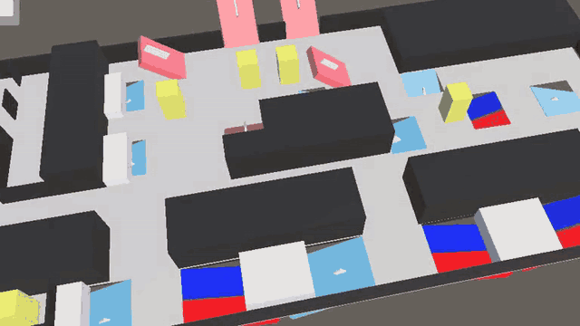

RESEARCH
연구

2026 – 진행 중 · 졸업논문
영상으로 보정한 반려견 물리 모델과 슬개골 탈구 보행
반려견 레오의 영상으로 물리 모델을 맞추고, 슬개골 탈구 등급별 무릎 한계를 넣었을 때 보행이 어떻게 바뀌는지 임상 측정값과 비교합니다.

2022 · KCGS 우수발표상 · 논문지 게재
외부 자력으로 움직이는 촉수 애니메트로닉스
몸 안에 모터를 넣지 않고, 바깥 전자석의 힘만으로 유연한 촉수 구조를 움직이게 한 연구입니다.

2025 · KCGS 2025 포스터 · AI 군중 시뮬레이션
군중 시뮬레이션 연구
밀도에 따라 스스로 움직이는 울타리로 7000명 대피 시간을 24.6% 줄인 연구와, 군중 사이에 감정이 퍼지는 과정을 시뮬레이션한 연구입니다.

2024 · HCI 창의상 우수상 · 제1저자
XR 테이크아웃 카페
가상 카페의 AI 점원에게 말로 주문하면, 실제 커피머신에서 커피가 나오는 대화형 XR 공간입니다.